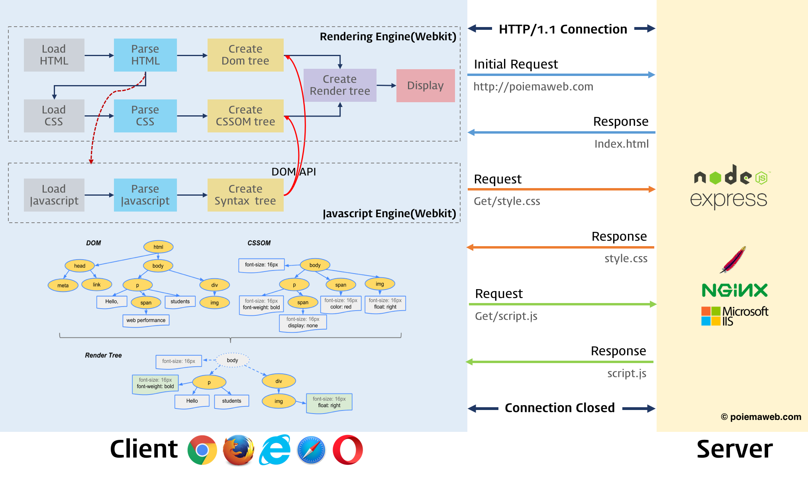
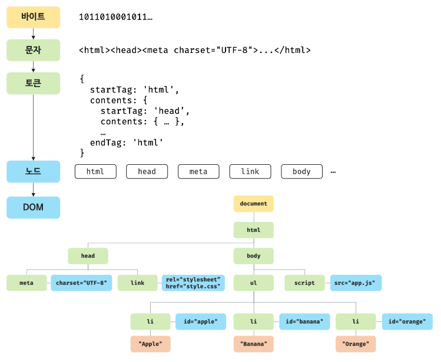
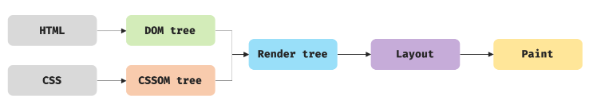
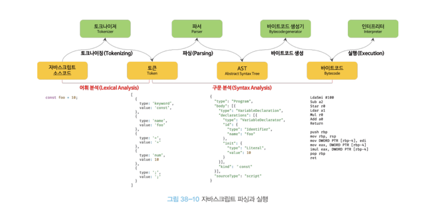

렌더링(rendering)은 HTML, CSS, 자바스크립트로 작성된 문서를 파싱하여 브라우저에 시각적으로 출력하는 것을 말한다. 브라우저는 다음과 같은 과정을 거쳐 렌더링을 수행한다.
브라우저는 HTML, CSS, 자바스크립트, 이미지, 폰트 파일 등 렌더링에 필요한 리소스를 요청하고 서버로부터 응답을 받는다.
브라우저의 렌더링 엔진은 서버로부터 응답된 HTML과 CSS를 파싱하여 DOM과 CSSOM을 생성하고 이들을 결합하여 렌더 트리를 생성한다.
브라우저의 자바스크립트 엔진은 서버로부터 응답된 자바스크립트를 파싱하여 AST(Abstract Syntax Tree)를 생성하고 바이트코드로 변환하여 실행한다. 이때 자바스크립트는 DOM API를 통해 DOM이나 CSSOM을 변경할 수 있다. 변경된 DOM과 CSSOM은 다시 렌더 트리로 결합된다.
렌더 트리를 기반으로 HTML 요소의 레이아웃(위치와 크기)를 계산하고 브라우저 화면에 HTML 요소를 페인팅한다.

HTML 파싱과 DOM 생성
HTML문서는 문자열로 이루어진 순수한 텍스트다. 브라우저 렌더링 엔진은 아래 그림과 같은 과정을 통해서 HTML 문서를 파싱하여 브라우저가 이해할 수 있는 자료구조인 DOM(Document Object Medel)을 생성한다.

브라우저는 서버가 응답한 HTML문서를 바이트 형태로 받는다. 그리고 HTML문서의 meta 태그의 charset을 기준으로 응답받은 HTML문서를 문자열로 변환한다. 그 다음 문자열로 변환된 HTML문서를 문법적 의미를 갖는 최소 단위인 토큰들로 분해한다.
각 토큰들은 객체로 변환하여 노드를 생성한다. 이 노드들은 DOM을 구성하는 기본 요소가 된다.
HTML문서는 HTML요소들의 집합으로 이루어지며 HTML요소는 중첩 관계를 갖는다. 이 중첩 관계에 의해 부모-자식 관계가 형성된다. 그리고 부모-자식 관계를 반영하여 모든 노드들을 트리 자료구조로 구성한다. 이 노드들로 구성된 트리 자료구조를 DOM(Document Object Medel)이라 부른다. DOM은 HTML문서를 파싱한 결과물이다.
CSS 파싱과 CSSOM 생성
렌더링 엔진은 HTML을 처음부터 한 줄씩 순차적으로 파싱하여 DOM을 생성해 나간다. 이때 CSS를 로드하는 link태그나 style태그를 만나면 DOM 생성을 일시 중단하고, CSS를 HTML과 동일한 파싱 과정을 거치며 CSSOM(CSS Object Model)을 생성한다. 이후 CSS 파싱이 완료되면 중단시점부터 HTML을 파싱해서 DOM 생성을 재개한다.
렌더 트리 생성
렌더링 엔진은 HTML과 CSS를 파싱하여 DOM과 CSSOM를 생성한다. 그리고 DOM과 CSSOM은 렌더링을 위해 렌더 트리로 결합된다. 렌더 트리는 렌더링을 위한 트리 구조의 자료구조다. 즉, 렌더 트리는 브라우저 화면에 렌더링되는 노드만으로 구성된다. 브라우저에 렌더링되지 않는 노드와 CSS에 의해 비표시되는 노드는 포함하지 않는다.
이후 완성된 렌더 트리는 각 HTML요소의 레이아웃을 계산하는 데 사용되며 브라우저 화면에 픽셀을 렌더링하는 페인팅 처리에 입력된다.

브라우저의 렌더링 과정은 아래의 경우에 반복해서 실행될 수 있다.
자바스크립트에 의한 노드 추가 또는 삭제
브라우저 창 리사이징에 의한 뷰포트 크기 변경
HTML요소의 레이아웃에 변경을 발생시키는 스타일 변경
리렌더링은 비용이 많이 드는 작업이므로 가급적 리렌더링이 빈번하게 발생하지 않도록 주의해야 한다.
파싱과 실행
HTML문서를 파싱한 결과물로 생성된 DOM은 HTML문서의 구조와 정보뿐만 아니라 HTML요소와 스타일 등을 변경할 수 있는 프로그래밍 인터페이스로서 DOM API를 제공한다. 자바스크립트에서 DOM API를 사용하면 이미 생성된 DOM을 동적으로 조작할 수 있다.
렌더링 엔진은 HTML문서를 순차적으로 파싱하며 DOM을 생성해 나가다가 자바스크립트를 로드하는 script태그나 자바스크립트 코드를 콘텐츠로 담은 script태그를 만다면 DOM 생성을 중단한다. 그리고 자바스크립트 엔진에 제어권을 넘겨 자바스크립트 코드를 파싱하고 실행한 후 다시 렌더링 엔진으로 제어권을 넘긴다.
자바스크립트 엔진은 렌더링 엔진이 HTML과 CSS를 파싱하여 DOM과 CSSOM을 생성하듯이 자바스크립트를 해석해서 AST(Abstract Syntax Tree)를 생성한다. 그리고 AST를 기반으로 인터프리터가 실행할 수 있는 중간 코드인 바이트코드를 생성하여 실행한다.

토크나이징(tokenizing) : 자바스크립트 코드를 문법적 의미를 갖는 코드의 최소 단위인 토큰으로 분해하는 과정
파싱(parsing) : 토큰을 기반으로 AST(Abstract Syntax Tree)를 생성한다.
바이트코드 생성과 실행 : AST를 인터프리터가 실행할 수 있는 바이트코드로 변환되고 인터프리터에 의해 실행된다.
자바스크립트의 실행 순서
렌더링 엔진과 자바스크립트 엔진은 병렬적으로 파싱을 실행하지 않고 직렬적으로 파싱을 수행한다. 이처럼 브라우저는 동기적으로, 위에서 아래 방향으로 순차적 파싱을 한다. 따라서 script태그의 위치에 따라 HTML파싱이 블로킹되어 DOM생성이 지연될 수 있다는 것이다. 따라서 script태그의 위치가 중요하다.
1
2
3
4
5
6
7
8
9
10
11
12
13
14
15
16
17
18
19
20
<!DOCTYPE html>
<html>
<head>
<meta charset="UTF-8">
<link rel="stylesheet" href="style.css">
<script>
const $apple = ducument.getElementById('apple');
$apple.style.color = 'red'; // TypeError: Cannot read property 'style' of null
</script>
</head>
<body>
<ul>
<li id="apple">Apple</li>
<li id="peach">Peach</li>
<li id="melon">Melon</li>
</ul>
</body>
</html>
위 코드에서 렌더링 엔진이 DOM을 파싱하다가 script태그를 만나면 파싱을 멈추고 자바스크립트 엔진으로 주도권을 전달한다. 이때 아직 아이디 apple의 li태그가 파싱되어 있지 않기 때문에 스크립트 코드는 에러가 발생한다.
이러한 문제를 회피하기 위해 body요소의 가장 아래에 자바스크립트를 위치시키는 것이 좋다.
DOM이 완성되지 않은 상태에서 자바스크립트가 DOM을 조작하면 에러가 발생할 수 있다.
자바스크립트 로딩/파싱/실행으로 인해 HTML요소들의 렌더링에 지장받는 일이 발생하지 않아 페이지 로딩 시간이 단축된다.